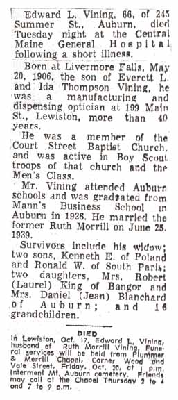
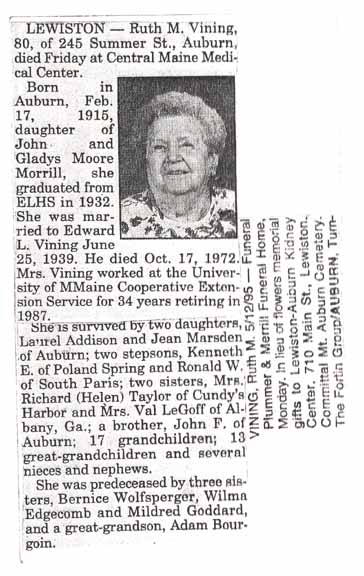
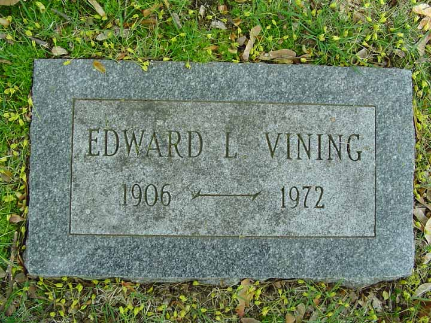
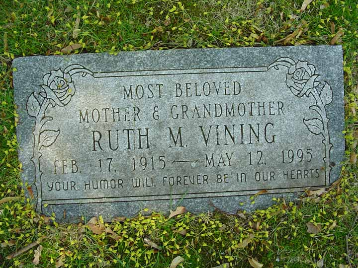

Census Data
| 1940 | |
| Edward Leander Vining | 33 |
| Marjorie E. (Newcomb) Vining | divorced |
| Ruth Elizabeth (Morrill) Vining | 25 |
| Kenneth Everett Vining | 7 [see note below] |
| Ronald Winston Vining | 5 [see note below] |
| Laurel Ann Vining | |
| Jean Elizabeth Vining |

Death Data
Obituaries (newspaper not identified) for Edward Leander Vining and his second wife, Ruth Elizabeth (Morrill) Vining:


